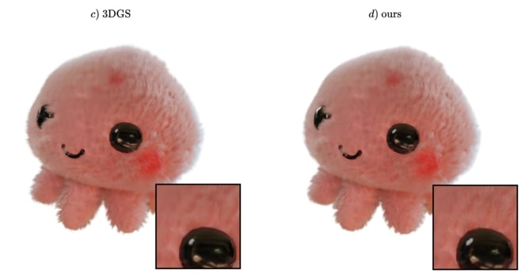

Bio
I will joinWestlake University and lead the Inception3D Lab Su Lab . I was an ELLIS Postdoc joinly supervised by Prof. Andreas Geiger (University of Tübingen) and Prof. Siyu Tang (ETH Zürich). I obtained my Ph.D at Chinese Academy of Sciences (ShanghaiTech) Visual Intelligent Center (VIC) in 2022, working with
Prof. Jingyi Yu , I was an intern at Disney Research LA and Hao Su's Lab during my Ph.D. Before that, I received my Bachelor degree in 2016 from Xidian University.
Services
Area Chair: CVPR 23/24/25, 3DV 24/25, NeurIPS 24/25
Journal reviewer: TOG, TIP, TPAMI, INFFUS ...
Conference reviewer: SIGGRAPH, SIGGRAPH Asia, ICCV, ECCV, ICLR, NeurIPS, AAAI ...
Workshop:
Neural Rendering Intelligence (CVPR'24)
Publications
* denotes equal contribution or advising; † denotes corresponding author
Easi3R: Estimating Disentangled Motion from DUSt3R Without Training
Arxiv
Xingyu Chen, Yue Chen, Yuliang Xiu, Andreas Geiger, Anpei Chen†
GenFusion: Closing the Loop between Reconstruction and Generation via Videos
CVPR 2025
Sibo Wu, Congrong Xu, Binbin Huang, Andreas Geiger, Anpei Chen†
Ref-GS : Directional Factorization for 2D Gaussian Splatting
CVPR 2025
Youjia Zhang, Anpei Chen† , Yumin Wan, Zikai Song, Junqing Yu, Yawei Luo, Wei Yang†
Feat2GS: Probing Visual Foundation Models with Gaussian Splatting
CVPR 2025
Yue Chen, Xingyu Chen, Anpei Chen , Gerard Pons-Moll, Yuliang Xiu

Volumetric Surfaces: Representing Fuzzy Geometries with Layered Meshes
CVPR 2025
Stefano Esposito, Anpei Chen , Christian Reiser, Samuel Rota Bulò, Lorenzo Porzi, Katja Schwarz, Christian Richardt, Michael Zollhoefer, Peter Kontschieder, Andreas Geiger
LaRa: Efficient Large-Baseline Radiance Fields
ECCV 2024
Anpei Chen , Haofei Xu, Stefano Esposito, Siyu Tang, Andreas Geiger
2DGS: 2d gaussian splatting for geometrically accurate radiance fields
SIGGRAPH 2024
Binbin Huang, Zehao Yu, Anpei Chen , Andreas Geiger, Shenghua Gao
NeLF-Pro: Neural Light Field Probes
CVPR 2024
Zinuo You, Andreas Geiger, Anpei Chen†
Mip-Splatting: Alias-free 3D Gaussian Splatting
CVPR 2024 (Oral, Best student paper)
Zehao Yu, Anpei Chen† , Binbin Huang, Torsten Sattler, Andreas Geiger
MuRF: Multi-Baseline Radiance Fields
CVPR 2024
Haofei Xu, Anpei Chen , Yuedong Chen, Christos Sakaridis, Yulun Zhang,
GraphDreamer: Compositional 3D Scene Synthesis from Scene Graphs
CVPR 2024
Gege Gao, Weiyang Liu, Anpei Chen , Andreas Geiger, Bernhard Schölkopf
Factor Fields: A Unified Framework for Neural Fields and Beyond
Anpei Chen , Zexiang Xu, Xinyue Wei, Siyu Tang, Hao Su, Andreas Geiger
Dictionary Fields: Learning a Neural Basis Decomposition
SIGGRAPH 2023 (Journal Track)
Anpei Chen , Zexiang Xu, Xinyue Wei, Siyu Tang, Hao Su, Andreas Geiger
Single-Stage Diffusion NeRF: A Unified Approach to 3D Generation and Reconstruction
ICCV 2023
Hansheng Chen, Jiatao Gu, Anpei Chen , Wei Tian, Zhuowen Tu, Lingjie Liu, Hao Su
SDFStudio: A Unified Framework for Surface Reconstruction
Zehao Yu, Anpei Chen , Bozidar Antic, Songyou Peng, Apratim Bhattacharyya,
NeRFPlayer: A Streamable Dynamic Scene Representation with Decomposed Neural Radiance Fields
IEEE VR 2023 (TVCG Journal Track)
Liangchen Song, Anpei Chen , Zhong Li, Zhang Chen, Lele Chen, Junsong Yuan, Yi Xu, Andreas Geiger
TensoRF: Tensorial Radiance Fields
Anpei Chen* , Zexiang Xu*, Andreas Geiger, Jingyi Yu, Hao Su
ICARUS: A Lightweight Neural Plenoptic Rendering Architecture
Siggraph Asia 2022 (TOG Journal Track)
Chaolin Rao, Huangjie Yu, Haochuan Wan, Jindong Zhou, Yueyang Zheng, Yu Ma, Anpei Chen , Minye Wu, Binzhe Yuan, Pingqiang Zhou, Xin Lou, Jingyi Yu
PREF: Phasorial Embedding Fields for Compact Neural Representation
Arxiv
Binbin Huang, Xinhao Yan, Anpei Chen , Shenghua Gao, Jingyi Yu
Anisotropic Fourier Features for Image-Based Rendering and Relighting
AAAI 2022 (Oral)
Huangjie Yu, Anpei Chen , Xin Chen, Lan Xu, Ziyu Shao, Jingyi Yu
MVSNeRF: Fast Generalizable Radiance Field Reconstruction from Multi-View Stereo
ICCV 2021
Anpei Chen* , Zexiang Xu*, Fuqiang Zhao, Xiaoshuai Zhang, Fanbo Xiang, Jingyi Yu, Hao Su
GNeRF: GAN-based Neural Radiance Field without Posed Camera
ICCV 2021 (Oral)
Quan Meng, Anpei Chen , Haimin Luo, Minye Wu, Hao Su, Lan Xu, Xuming He, Jingyi Yu
ConvNeRF: Convolutional Neural Opacity Radiance Fields
ICCP 2021
Haimin Luo, Anpei Chen , Qixuan Zhang, Bai Pang, Minye Wu, Lan Xu, Jingyi Yu
SofGAN: A Portrait Image Generator with Dynamic Styling
Transactions on Graphics (TOG)
Anpei Chen* , Ruiyang Liu*, Ling Xie, Zhang Chen, Hao Su, Jingyi Yu
A neural rendering framework for free-viewpoint relighting
CVPR 2020
Zhang Chen, Anpei Chen , Guli Zhang, Chengyuan Wang, Yu Ji, Kiriakos N Kutulakos, Jingyi Yu
Photo-Realistic Facial Details Synthesis from Single Image
ICCV 2019 (Oral)
Anpei Chen , Zhang Chen, Guli Zhang, Ziheng Zhang, Kenny Mitchell, Jingyi Yu
Sparse photometric 3d face reconstruction guided by morphable models
CVPR 2019
Xuan Cao, Zhang Chen, Anpei Chen , Xin Chen, Shiying Li, Jingyi Yu
Learning semantics-aware distance map with semantics layering network for amodal instance segmentation
ACM MM 2019
Ziheng Zhang*, Anpei Chen* , Ling Xie, Jingyi Yu, Shenghua Gao
Refocusable Gigapixel Panoramas for Immersive VR Experiences
TVCG 2019
Wentao Lyu, Peng Ding, Yingliang Zhang, Anpei Chen , Minye Wu, Shu Yin, Jingyi Yu
Deep surface light fields
I3D 2018
Anpei Chen , Minye Wu, Yingliang Zhang, Nianyi Li, Jie Lu, Shenghua Gao, Jingyi Yu